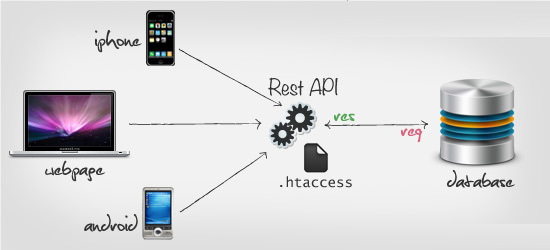

# Rest
REST，即 Representational State Transfer 的缩写。直接翻译的意思是 "表现层状态转化"。
它是一种互联网应用程序的 API 设计理念：URL 定位资源，用 HTTP 动词（GET,POST,DELETE,DETC）描述操作。
REST 描述了一个架构样式的网络系统，比如 web 应用程序。它首次出现在 2000 年 Roy Fielding 的博士论文中，Roy Fielding 是 HTTP 规范的主要编写者之一。在目前主流的三种 Web 服务交互方案中，REST 相比于 SOAP（Simple Object Access protocol，简单对象访问协议）以及 XML-RPC 更加简单明了，无论是对 URL 的处理还是对 Payload 的编码，REST 都倾向于用更加简单轻量的方法设计和实现。值得注意的是 REST 并没有一个明确的标准，而更像是一种设计的风格。
# 产生背景
近年来移动互联网的发展，前端设备层出不穷（手机、平板、桌面电脑、其他专用设备......），因此，必须有一种统一的机制，方便不同的前端设备与后端进行通信，于是 RESTful 诞生了，它可以通过一套统一的接口为 Web，iOS 和 Android 提供服务。

# URI
即统一资源标识符，服务器上每一种资源，比如文档、图像、视频片段、程序 都由一个通用资源标识符（Uniform Resource Identifier, 简称 "URI"）进行定位。
# HTTP 动词
常用的 HTTP 动词有下面五个
- GET（SELECT）：从服务器取出资源（一项或多项）。
- POST（CREATE）：在服务器新建一个资源。
- PUT（UPDATE）：在服务器更新资源（客户端提供改变后的完整资源）。
- PATCH（UPDATE）：在服务器更新资源（客户端提供改变的属性）。
- DELETE（DELETE）：从服务器删除资源。
# RESTful 架构
RESTful 架构是对 MVC 架构改进后所形成的一种架构，通过使用事先定义好的接口与不同的服务联系起来。在 RESTful 架构中，浏览器使用 POST，DELETE，PUT 和 GET 四种请求方式分别对指定的 URL 资源进行增删改查操作。因此，RESTful 是通过 URI 实现对资源的管理及访问，具有扩展性强、结构清晰的特点。
服务器上每一种资源，比如一个文件，一张图片，一部电影，都有对应的 url 地址，如果我们的客户端需要对服务器上的这个资源进行操作，就需要通过 http 协议执行相应的动作来操作它，比如进行获取，更新，删除。
简单来说就是 url 地址中只包含名词表示资源，使用 http 动词表示动作进行操作资源
举个例子：左边是错误的设计，而右边是正确的
GET /blog/getArticles --> GET /blog/Articles 获取所有文章
GET /blog/addArticles --> POST /blog/Articles 添加一篇文章
GET /blog/editArticles --> PUT /blog/Articles 修改一篇文章
GET /rest/api/deleteArticles?id=1 --> DELETE /blog/Articles/1 删除一篇文章
# 各大平台 API 为什么不使用 restful 的风格
这就好象是中文已经用了上千年，突然有几位教授大谈 “回字的 14 种写法”，这只能算是新瓶装旧酒、学究式的文章。一旦媒体不忽悠了，也就过气了。而媒体关注了几个月之后，关注点已经放到云、大数据等等明显是更长久、更工程化的概念上了，懒得对小伎俩去宣传了。
那个东西除了平白无故地额外多出来规定，没有什么发明技术含量的东西（不能被大企业用来衍生出自己的专利技术），因此不可能成为工业标准，充其量是叫兽用用。
其实所谓的 restful 更适合那些总想着沽名钓誉的硕士研究生们去堆砌辞藻，用来体现出自己比其他众多工程技术人员 “高人一等”，以避免其它具有更丰富的工程技术的开发人员瞧不起这些人。除此以外，它没有什么实际的技术含量，（正如所看到的）所有实际大项目的工程技术人员都在使用轻量级的 web 服务方式（从 10 几年前的电信级的、基于 http 的远程传输应用就是，人家根本不用 webservice）。基本上都是初学者或者大学老师在纠结于繁琐的 web 服务里边 “如何规范名词儿” 的问题。
核心问题在于 RESTful API 设计，容易思考，但是不适合实际使用。
这个，就和设计网络协议一样，七层网络模型，理解很给力，实际还是采用四层网络模型一样。
基于 RESTful API 理解很好理解，但是会严重增加不必要的网络传输消耗。实际使用，基于较少网络消耗较少数据连接的考虑，会更加贴近实际业务场景的 API 设计，至于 DELETE，PUT 之类的，不是不愿意使用，是需要对现有业务进行大量不必要的改造，而这种改造，完成是没有必要的。
# 原则
REST 指的是一组架构约束条件和原则。满足这些约束条件和原则的应用程序或设计就是 RESTful。
Web 应用程序最重要的 REST 原则是，客户端和服务器之间的交互在请求之间是无状态的。从客户端到服务器的每个请求都必须包含理解请求所必需的信息。如果服务器在请求之间的任何时间点重启，客户端不会得到通知。此外，无状态请求可以由任何可用服务器回答，这十分适合云计算之类的环境。客户端可以缓存数据以改进性能。
在服务器端，应用程序状态和功能可以分为各种资源。资源是一个有趣的概念实体，它向客户端公开。资源的例子有：应用程序对象、数据库记录、算法等等。每个资源都使用 URI (Universal Resource Identifier) 得到一个唯一的地址。所有资源都共享统一的接口，以便在客户端和服务器之间传输状态。使用的是标准的 HTTP 方法，比如 GET、PUT、POST 和 DELETE。Hypermedia 是应用程序状态的引擎，资源表示通过超链接互联。
# 特点
1、每一个 URI 代表 1 种资源；
2、客户端使用 GET、POST、PUT、DELETE4 个表示操作方式的动词对服务端资源进行操作：GET 用来获取资源，POST 用来新建资源（也可以用于更新资源），PUT 用来更新资源，DELETE 用来删除资源；
3、通过操作资源的表现形式来操作资源；
4、资源的表现形式是 XML 或者 HTML；
5、客户端与服务端之间的交互在请求之间是无状态的，从客户端到服务端的每个请求都必须包含理解请求所必需的信息。